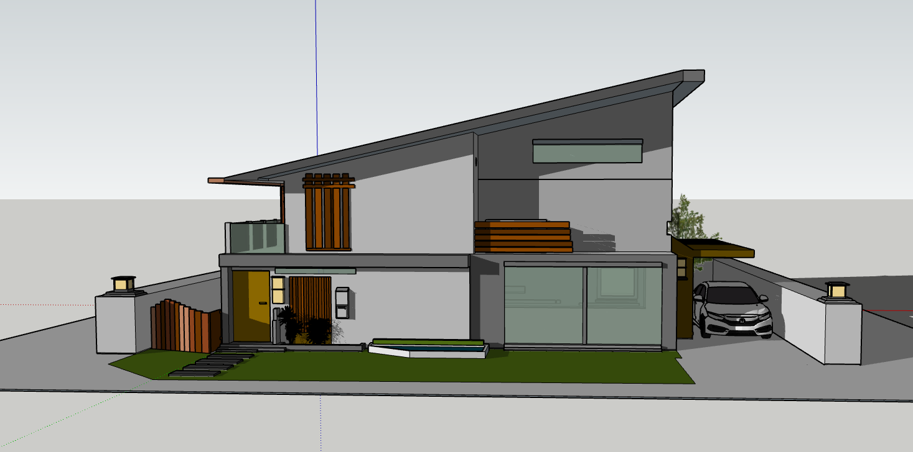
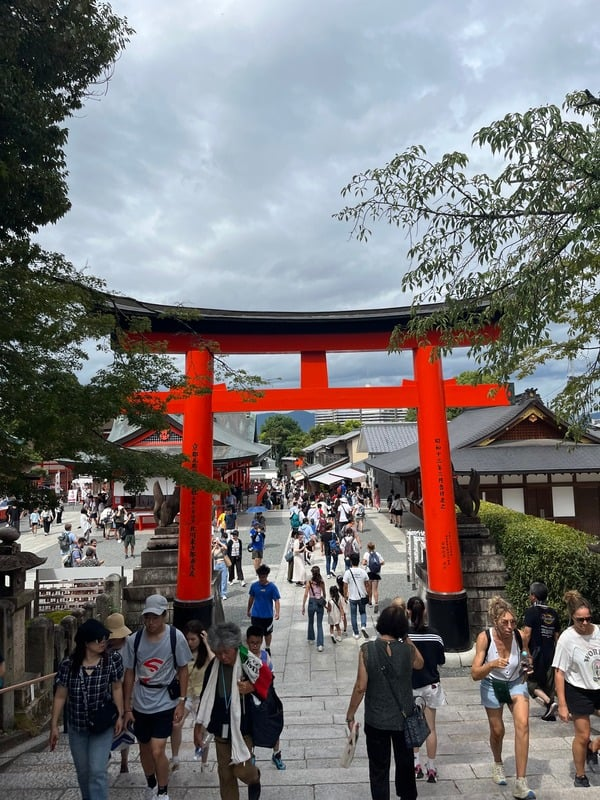
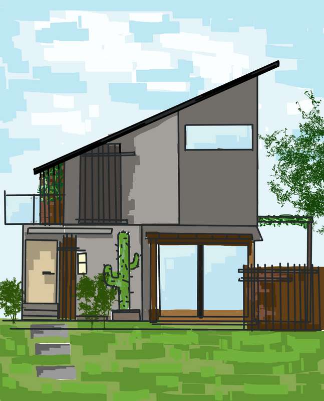
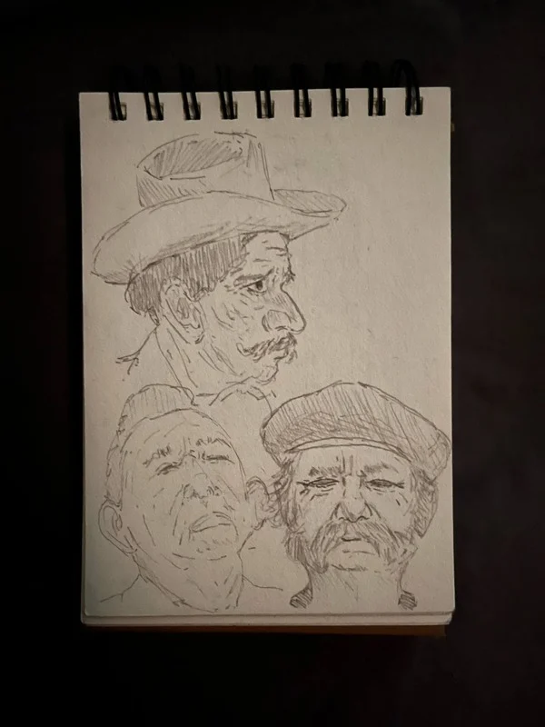
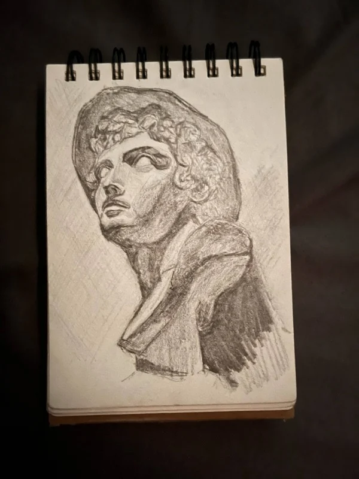
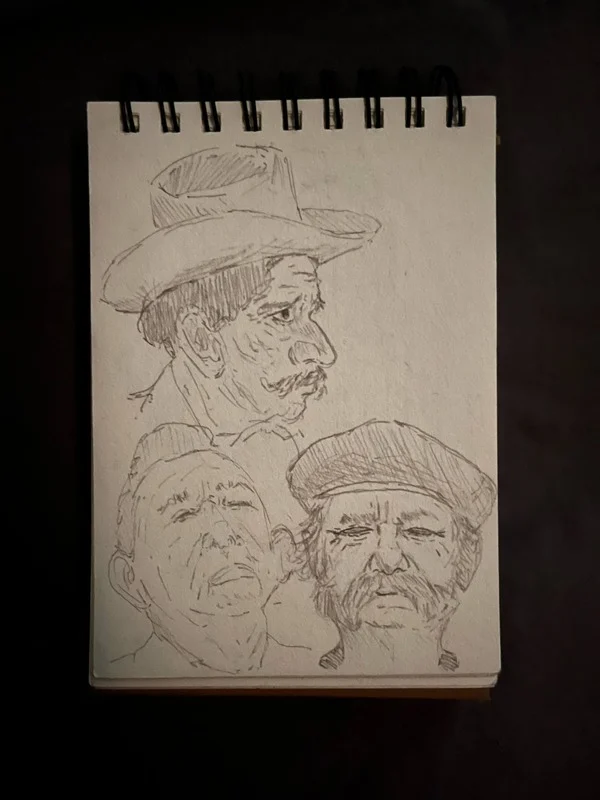
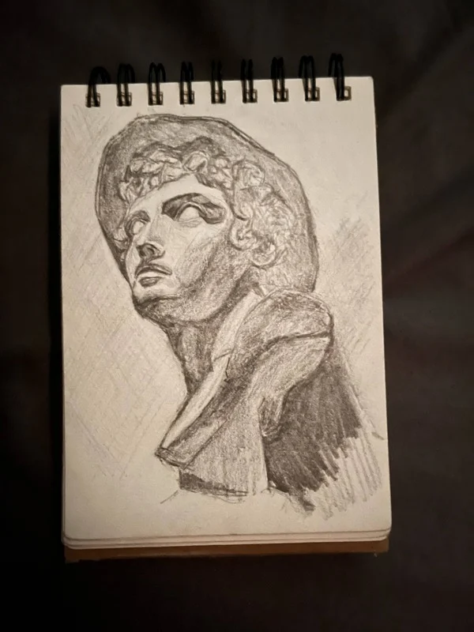

目錄
01 自我介紹

02 建模作品

03 繪圖作品

04 攝影作品
05 實體作品
TruePrint Edition v17 (Final Image/Comment Fix): 此版本專為精確A4列印設計。進一步調整圖片大小並確保無內部註解。
列印時，請選擇「另存為 PDF」，紙張大小A4，邊界「預設」或「無」，勾選「背景圖形」。
陳民桓｜國立金門高中
東海大學建築系
01 自我介紹
02 建模作品
03 繪圖作品
04 攝影作品
05 實體作品

我是陳民桓，一位土生土長的金門人。父母教育方式開明，從小就尊重並支持我的興趣與志向，讓我能自在探索、勇於嘗試，逐步培養出獨立思考與自我規劃的能力。
我性格細心有責任感，對美術與設計充滿熱情，善於觀察細節、思考空間與人的互動。高中三年，我積極參與建築模型製作與 3D 建模練習，培養空間感與構造邏輯，也熱愛將生活靈感轉化為創作。
我樂於學習、勇於挑戰，曾參加辯論社鍛鍊表達與思辨能力，也在童軍社中學會團隊合作與解決問題。後來參加加辯論社後，我學會冷靜應對壓力、清楚表達觀點，逐漸變得有自信也更受同儕信任。
雖然我有時對細節過於要求，導致行事較慢，但在家人全力支持下，我學會平衡效率與品質，並不斷成長。未來我希望能留在家鄉，投入公共空間規劃與文化保存，為地方注入新生命。


在迷宮、公車亭與坐的裝置三項改造學校現況的設計中，我嘗試從不同尺度與角度探索空間與人的關係。作品依照現實比例製作。此經驗讓我學會從概念出發整合功能與形式，並透過建模將設計具象化，為日後建築學習打下堅實基礎。


以日式建築的簡約精神出發，融合木格柵、自然採光、綠化，延伸出美感與實用的外觀。半開放圍牆界定庭院，模糊內外界線。立面大窗引入光線，強化視覺連結。木格柵兼具遮陽隱私。燈光營造夜間氛圍。整體強調建築與自然的對話，展現靜謐、通透而富層次的生活場景。

透過電繪描繪住宅在日夜情境下的空間氛圍。日景呈現建築與自然光的互動，強調開放性；夜景透過燈光與陰影變化，營造溫暖靜謐的居住氛圍。此二圖展現建築不同時間的表情，也強調空間如何回應光線、情境與使用者節奏，反映我對建築氛圍與居住感受的細膩關注。

 



透過素描、自畫像與建築速寫，我訓練自己對比例、光影與結構的敏銳度。手繪讓我更直接地觀察世界，也強化我在建築設計中對空間与細節的掌握。這些作品是我理解形體、構圖与人与建築關係的起點。
我熱愛光影從我的眼前渲染，熱衷於將這些瞬間定格。記錄同時，亦在筆記本記錄這些有機構成背後的巧思或創意。透過攝影，能輕鬆將世界有趣一面，轉化為我設計有用又巧妙的設計素材。

渴望進入貴建築學系，因我對光影捕捉解讀與有機構成的分析能力，能為學習建築奠基。希望能系統學習結構、材料與空間佈局，從而主動「設計」光影，創造兼具實用巧妙與詩意美感的建築。深信建築是技術與藝術的融合，光影便是我理解這門藝術的獨特視角。
建築模型：展示對材質、形式與功能的深刻理解。1/20模型中，以冰棒棍和風扣板模擬木質，創溫暖氛圍。圍牆設計來自校園舊圍牆，以現代語言重新詮釋，賦予空間新生命。
生活科技作品：製作鉛筆盒與筆筒，強調精確切割與榫卯結構。筆筒加入巧思，底蓋延伸挖槽，具備放筆與手機功能，增強實用性。
材質探索：探索紙片球體，研究材料變化與結構。展現對創意、功能性與美學平衡的探索，反映設計理念的具體實現。
The End
感謝您的閱覽